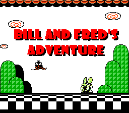
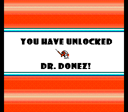

Nintendo to develop Neglected Characters Game! |
|
-The tentive title of the game is "Bill and Fred's Adventure", inspired by the comix series on this site, "Bill and Fred's Quazi-Mediocre Adventure". -Many characters from the site will appear in the game, although they did not say exactly who. Right now, there are no specific details about what type of game "Bill and Fred's Adventure" would be. Apparently, it is still in heavy development. It was hinted that "Bill and Fred's Adventure" would be a mixture of Role Playing, Adventure, Action, and Strategy. The developer said that he would keep me posted on details of the game as it is made by Nintendo. When I asked when the game would be released, he gave me no solid answer. He hopes that Nintendo will be able to produce it for a 2004 release. He hinted that it would be out April 1st, 2004, although that was just a wild guess. While "Bill and Fred's Adventure" is only in it's early stages, the fact that Nintendo is working on the game means that it is sure to be a hit. I begged him for some screenshots and he was able to share with me only a couple.  The beta version of the opening screen, revealing that Bill and Fred will in fact be the star characters of this game.  This screen shot shows that Dr. Donez will be one of the many neglected characters to appear in the game. This surely is a great day in NC Land. I will keep you posted as news comes in. Let's hear it for "Bill and Fred's Adventure"! Woo hoo! Oh, and have a happy April First. |
|
Go back to NC |